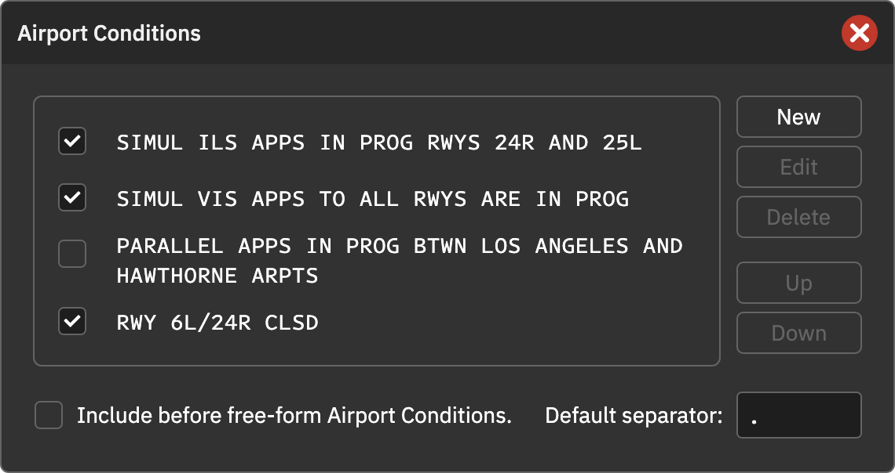
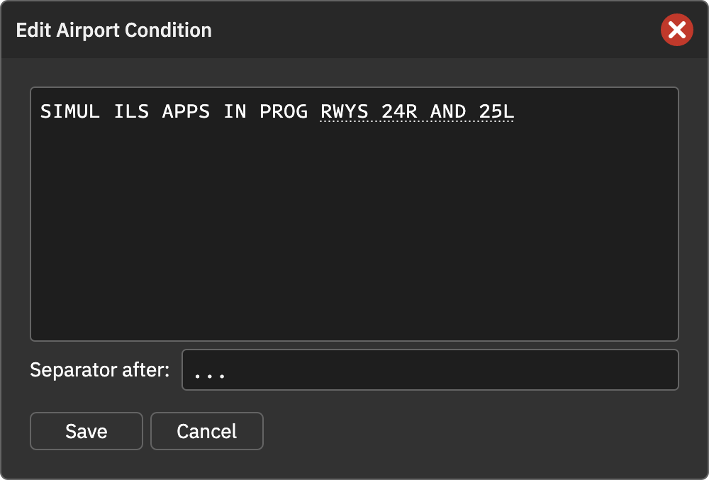

机场运行情况
机场运行情况包括使用跑道、进近方式等。除主窗口中的自由文本外，还可以创建可勾选的固定消息。固定消息保存在席位中，可以配合不同预设使用。
管理固定消息
- 点击自由文本框上方的 AIRPORT CONDITIONS 标题。
- 在弹窗中新建、编辑或删除消息。
- 使用 Up / Down 调整顺序，只有勾选的消息会写入 ATIS，顺序与列表一致。
编辑时输入 @ 后跟缩略语变量名即可搜索自动补全。选中补全项后 @ 可能被去掉；变量本身仍可识别。
插入顺序
启用 Include Before Free-form Airport Conditions 后，固定消息在自由文本前，否则在后。两部分之间用空格连接。
消息分隔符
- Default separator：固定消息之间的默认分隔符，通常为句号加空格
.。 - Separator after：当前消息后使用的自定义分隔符，留空使用默认；最后一条消息后无效。
分隔符按原样使用，空格也必须明确输入。例如第一条后设置 ...：
SIMUL ILS APPS IN PROG RWYS 24R AND 25L... SIMUL VIS APPS TO ALL RWYS ARE IN PROG. RWY 6L/24R CLSD
全部使用默认分隔符时，程序会清理重复标点。只要自定义了分隔符，就按输入原样连接；此时可让消息本身不带句号，由分隔符统一补充。
操作截图参考
以下为上游原版截图，保留英文标签。用于定位操作；品牌、登录字段与网络行为以本页 CAN 说明为准。

